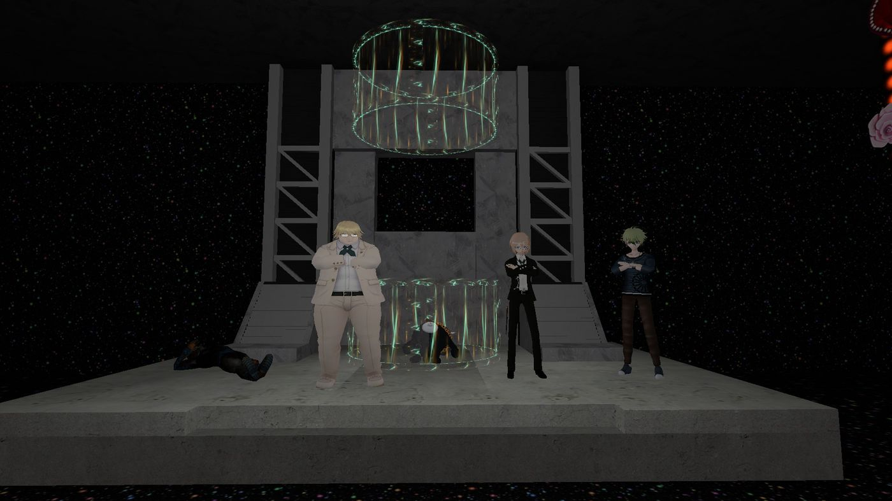
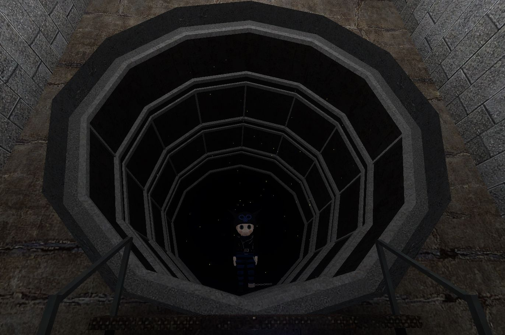
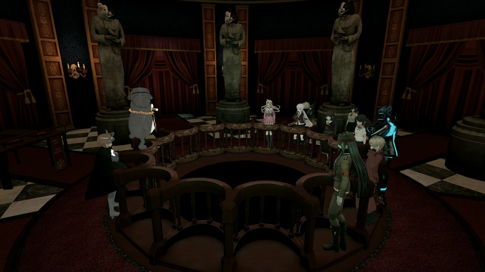
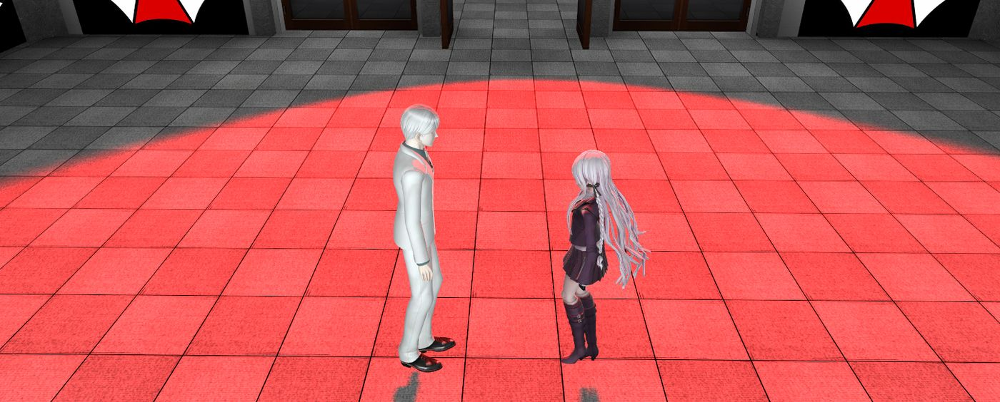

Chaque personnage appartient plus ou moins à un ou plusieurs de ces 5 rôles au sein du groupe.
Notre serveur est un jeu de rôle multijoueur avec des éléments de thriller policier, dans lequel les participants doivent trouver un tueur pour survivre, ou le devenir pour vaincre. Réalise le meurtre parfait, déjoue l'enquête et déjoue tous les participants au procès pour sortir victorieux du Killing Game.
Si tu veux sortir et gagner, il faut réaliser le meurtre parfait, interférer avec l'enquête, semer le doute pendant le procès, et survivre : pour gagner, tu dois trahir les autres. Si personne ne découvre que c'est toi qui as tué, tu peux sortir et tes amis seront exécutés. À l'inverse, si tu te fais démasquer, tu seras le seul à être exécuté.
Si tu n'as pas tué, tu dois rechercher les preuves laissées après un meurtre pour reconstituer les événements et comprendre le mode opératoire du tueur. Ta vie et celle de tes amis en dépendent : si vous ne trouvez pas le "noirci" (celui qui a tué), vous mourrez tous sauf lui. Pendant le procès, fournis tes preuves et essaie de mettre en lumière le tueur.
Chaque personnage oscille dans ces 5 catégories. Certains vont avoir plusieurs rôles comme Byakuya qui est Leader et Analyste en même temps. Cette classification est utilisée aussi dans les OC pour mieux les comprendre.

Structure le groupe, prend les décisions difficiles, gère la logistique. Byakuya Togami (autoritaire) ou Kyosuke Munakata (chez Future Foundation) en sont de bons exemples.

Maintient la cohésion émotionnelle, réconforte, désamorce les tensions. Sayaka Maizono ou Chiaki Nanami. Mais ça peut aussi être des comics reliefs en cassant la tension, souvent sous-estimé mais parfois crucial pour débloquer une situation. Hifumi, Teruteru, Kazuichi.

Ni vraiment allié ni ennemi, agit selon sa propre logique alors même que cela pourrait être bénéfique pour le tueur. Nagito Komaeda est l'exemple ultime, son "espoir" tordu en fait un élément que le groupe ne peut ni ignorer ni totalement contrôler. En moins évident, Aoi est en un sens troublemaker au chapitre 4 de DR1.

Celui qui mène l'enquête, connecte les indices, pose les bonnes questions. Kyoko Kirigiri est l'archétype pur. Mais des personnages comme Byakuya Togami ou encore Junko Enoshima rentre dans ce rôle.

Assure la sécurité physique du groupe, intervient en cas de danger direct. Sakura Ogami en est le meilleur exemple.
Le staff conseille de commencer par des personnages de type "support" jugé plus facile à jouer que d'autres personnages qui ont besoin de prendre beaucoup d'initiatives. Voici le ranking des difficultés :
Les personnages troublemakers sont difficiles à jouer par la complexité de leurs philosophies.
Très difficile à jouer si vous n'êtes pas vous-même déjà un minimum sagace, tout dépendra de la gentillesse de votre Monokuma, soit il vous aidera beaucoup soit il vous laissera vous débrouillez vous-même.
Difficile à jouer car il faut savoir se faire respecter, avoir de l'autorité et se mettre en avant.
Difficile à jouer car il faut savoir se battre dans Gmod avec les addons à votre disposition.
Difficile à jouer car il faut pas abuser sur les blagues pour pas devenir un gag ambulant, il faut savoir quand on peut faire des blagues et quand on doit respecter le fear rp, et c'est dur car les Monokuma ont souvent tendance à donner que de petits rôles aux personnages supports.
Pour savoir quels personnages appartiennent à quel catégorie, allez voir dans Personnages.